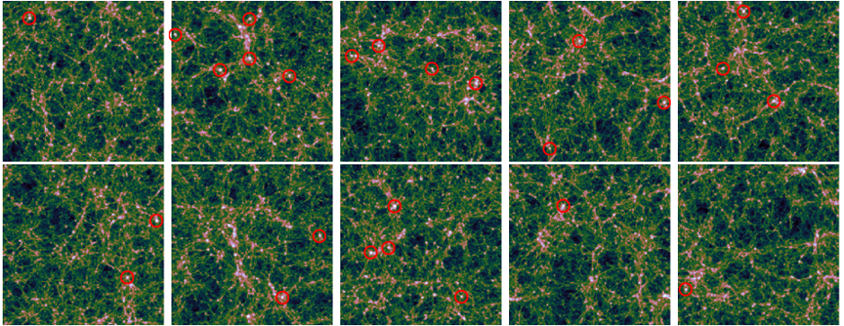
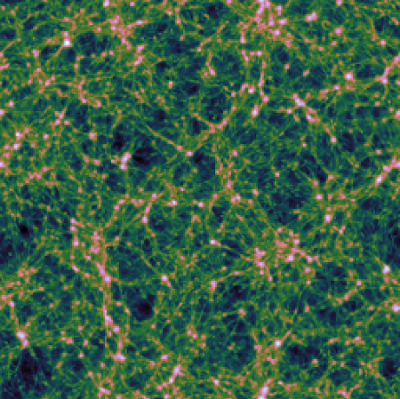
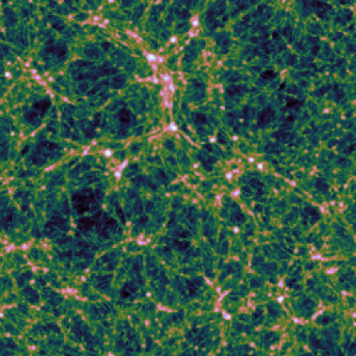
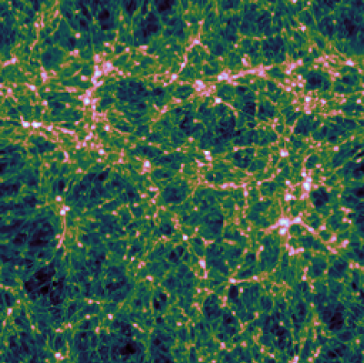
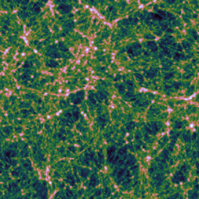
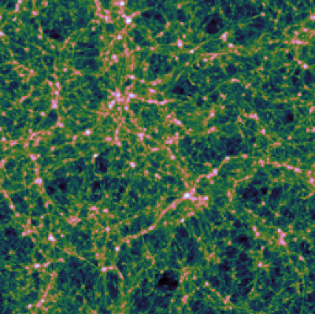
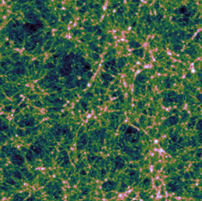
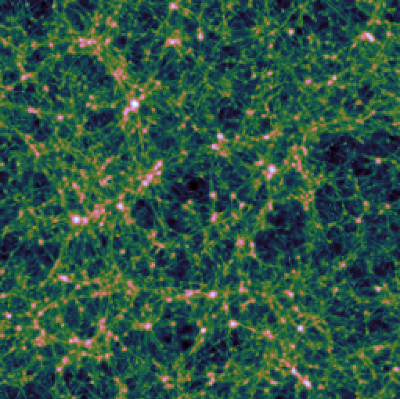
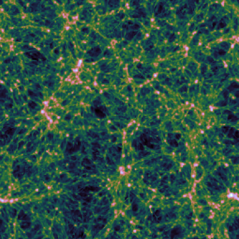
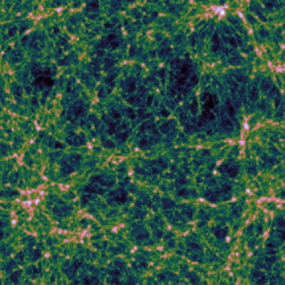

SAN PEDRO: A Catalogue of simulated Radio Relics
San Pedro Radio Relic Catalogue
Radio Relics are spectacular radio sources observed at the periphery of galaxy clusters. It is commonly assumed that radio relics are produced by the shock (re-)acceleration of cosmic-ray electrons that emit synchrotron emission the vicinity of large scale magnetic fields. Radio relics are probes for both the shock acceleration mechanism of low Mach number shocks in high beta plasmas as well as the magnetic fields in the cluster periphery. While the prototype of relics is arcshaped, new observations reveal that relics can have more peculiar shapes. Furthermore, relics show a variety of different observational signatures. This catalogue is meant to be the theoretical complement to these observations.
All cluster in the San Pedro Sample are extracted from cosmological simulations that have been performed with the ENZO code. Each cosmological simulations covers a root grid volume of (200 Mpc)^3 and is modelled with 256^3 grid cells. The goal of the catalogue is to simulate massive galaxy clusters (masses larger than 10^14 solar masses) at high resolution using nested region. In a first step, we re-simulate possible cluster candidates using 5 nested levels that cover a region of (6.25 Mpc)^3 for a resolution of 25 kpc. In a second step, we add 3 additional refinement levels for cluster that show prominent radio relics. The nested simulations are initialized using MUSIC.
The cosmological parameters for all simulations are: h_0 = 0.6766, Omega_lambda = 0.6889, Omega_Matter = 0.3111 and Omega_Baryon = 0.0483. This parameters are in agreement with the latest results of the Planck-Collaboration. All simulations are performed on Juwels, a super computer based in Juelich, Germany.
The San Pedro Cluster Catalogue is an on-going project. Currently, the first set of nested simulations are computed (updates will follow).
- 
SP0m
- 
SP1m
- 
SP2m
- 
SP3m
- 
SP4m
- 
SP5m
-

SP6m
- 
SP7m
- 
SP8m
- 
SP9m